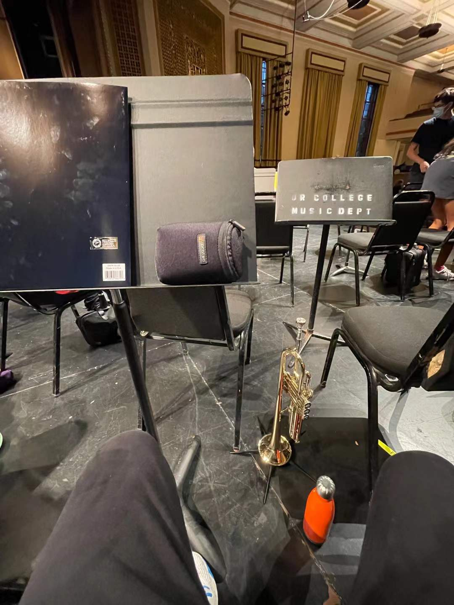
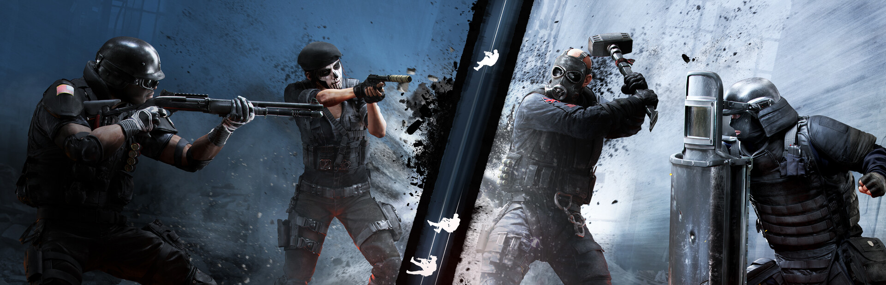
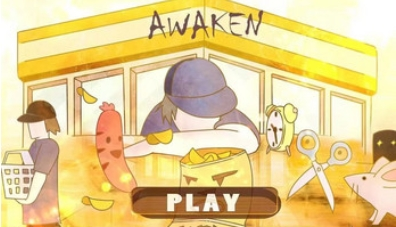

01 / Music
Playing trumpet
During my spare time, I love playing the trumpet. I enjoy classical music a lot and currently exploring jazz.
Trumpet
Ensemble
Blog / Interests
Personal notes, everyday observations, and life beyond the project page.
01 / Personal
The music I return to, the games I keep coming back to, and the small worlds I help build.

01 / Music
During my spare time, I love playing the trumpet. I enjoy classical music a lot and currently exploring jazz.
 Counter-Strike 2
Counter-Strike 2

Rainbow Six Siege
03 / Game Development
Apart from playing games, I also enjoy making them in my spare time. Awaken is a 3D indie game I helped build as a programmer with a seven-person team during a 48-hour game jam.